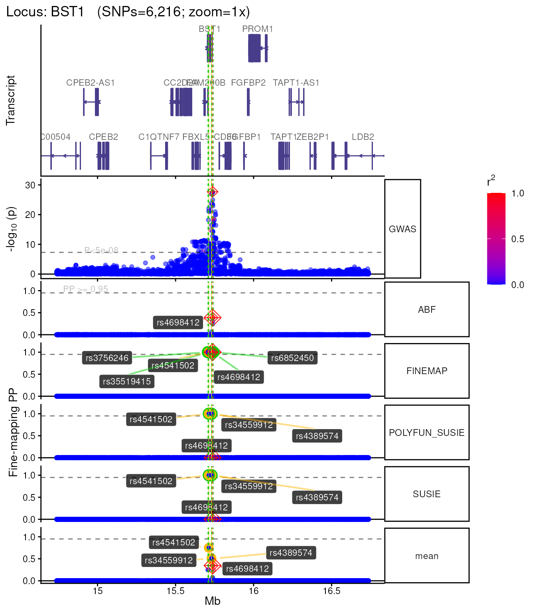
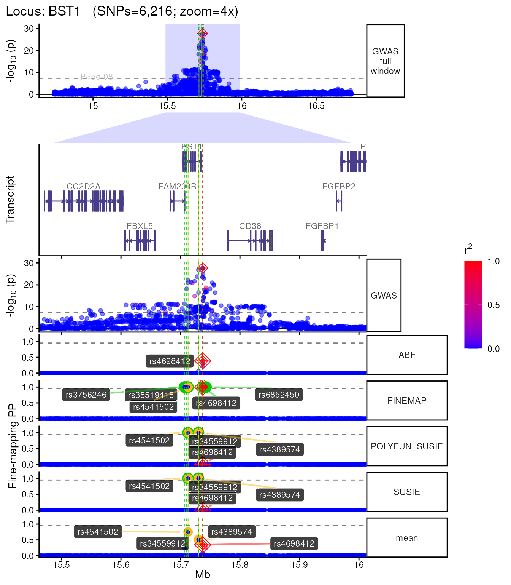
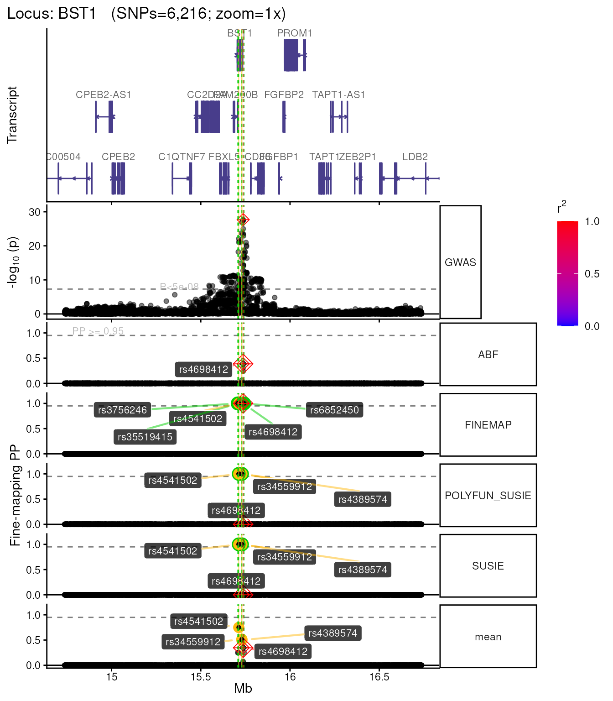

Plotting fine-mapping results
Author: Brian M. Schilder
Author: Brian M. Schilder
Updated: Mar-15-2026
Source: Updated: Mar-15-2026
vignettes/plotting.Rmd
plotting.Rmd## ## ── 🦇 🦇 🦇 e c h o l o c a t o R 🦇 🦇 🦇 ─────────────────────────────────## ## ── v3.0.0 ──────────────────────────────────────────────────────────────────────## ## ────────────────────────────────────────────────────────────────────────────────## ⠊⠉⠡⣀⣀⠊⠉⠡⣀⣀⠊⠉⠢⣀⡠⠊⠉⠢⣀⡠⠊⠉⠢⣀⡠⠊⠉⠢⣀⡠⠊⠉⠢⣀⡠⠊⠉⠢⣀⡠
## ⠌⢁⡐⠉⣀⠊⢂⡐⠑⣀⠊⢂⡐⠑⣀⠊⢂⡐⠑⣀⠊⢂⡐⠑⣀⠊⢂⡐⠑⣀⠉⢂⡈⠑⣀⠉⢄⡈⠡⣀
## ⠌⡈⡐⢂⢁⠒⡈⡐⢂⢁⠒⡈⡐⢂⢁⠑⡈⡈⢄⢁⠡⠌⡈⠤⢁⠡⠌⡈⠤⢁⠡⠌⡈⡠⢁⢁⠊⡈⡐⢂
## ⠌⡈⡐⢂⢁⠒⡈⡐⢂⢁⠒⡈⡐⢂⢁⠑⡈⡈⢄⢁⠡⠌⡈⠤⢁⠡⠌⡈⠤⢁⠡⠌⡈⡠⢁⢁⠊⡈⡐⢂
## ⠌⢁⡐⠉⣀⠊⢂⡐⠑⣀⠊⢂⡐⠑⣀⠊⢂⡐⠑⣀⠊⢂⡐⠑⣀⠊⢂⡐⠑⣀⠉⢂⡈⠑⣀⠉⢄⡈⠡⣀
## ⠊⠉⠡⣀⣀⠊⠉⠡⣀⣀⠊⠉⠢⣀⡠⠊⠉⠢⣀⡠⠊⠉⠢⣀⡠⠊⠉⠢⣀⡠⠊⠉⠢⣀⡠⠊⠉⠢⣀⡠
## ⓞ If you use echolocatoR or any of the echoverse subpackages, please cite:
## ▶ Brian M Schilder, Jack Humphrey, Towfique
## Raj (2021). echolocatoR: an automated
## end-to-end statistical and functional
## genomic fine-mapping pipeline.
## Bioinformatics, btab658.
## https://doi.org/10.1093/bioinformatics/btab658
## ⓞ Please report any bugs/feature requests on GitHub:
## ▶
## https://github.com/RajLabMSSM/echolocatoR/issues
## ⓞ Contributions are welcome!:
## ▶
## https://github.com/RajLabMSSM/echolocatoR/pulls
## Tip: Run check_echoverse_setup() to diagnose any issues.
can_plot <- tryCatch({
requireNamespace("echoplot", quietly = TRUE) &&
requireNamespace("ggplot2", quietly = TRUE) &&
requireNamespace("patchwork", quietly = TRUE)
}, error = function(e) FALSE)Overview
echoplot provides multi-track locus plots that combine
GWAS association signals, fine-mapping posterior probabilities, LD
structure, and gene models in a single figure. This vignette
demonstrates common plotting workflows using bundled example data —
no internet connection is required.
For the full fine-mapping pipeline, see
vignette("echolocatoR"). For interpreting results, see
vignette("explore_results").
Load example data
dat <- echodata::BST1
LD_matrix <- echodata::BST1_LD_matrix
locus_dir <- file.path(tempdir(), echodata::locus_dir)Basic locus plot
The main function echoplot::plot_locus() creates a
multi-panel figure with GWAS p-values, fine-mapping posterior
probabilities, and gene tracks. SNPs are colored by LD r² with the lead
SNP.
plt <- tryCatch(
echoplot::plot_locus(
dat = dat,
locus_dir = locus_dir,
LD_matrix = LD_matrix,
show_plot = FALSE,
save_plot = FALSE,
verbose = FALSE
),
error = function(e) { message("plot_locus error: ", e$message); NULL }
)## + support_thresh = 2## + Calculating mean Posterior Probability (mean.PP)...## + 4 fine-mapping methods used.## + 7 Credible Set SNPs identified.## + 3 Consensus SNPs identified.## + Filling NAs in CS cols with 0.## + Filling NAs in PP cols with 0.## Loading required namespace: ggrepel## Loading required namespace: EnsDb.Hsapiens.v75## Fetching data...OK
## Parsing exons...OK
## Defining introns...OK
## Defining UTRs...OK
## Defining CDS...OK
## aggregating...
## Done
## Constructing graphics...
## + echoplot:: Get window suffix...
if (!is.null(plt)) plt[["1x"]]
Customizing the plot
Multiple zoom levels
You can generate plots at different zoom levels to focus on the fine-mapped region:
plt_zoom <- tryCatch(
echoplot::plot_locus(
dat = dat,
locus_dir = locus_dir,
LD_matrix = LD_matrix,
zoom = c("1x", "4x"),
show_plot = FALSE,
save_plot = FALSE,
verbose = FALSE
),
error = function(e) { message("plot_locus error: ", e$message); NULL }
)## + support_thresh = 2## + Calculating mean Posterior Probability (mean.PP)...## + 4 fine-mapping methods used.## + 7 Credible Set SNPs identified.## + 3 Consensus SNPs identified.## + Filling NAs in CS cols with 0.## + Filling NAs in PP cols with 0.## Fetching data...OK
## Parsing exons...OK
## Defining introns...OK
## Defining UTRs...OK
## Defining CDS...OK
## aggregating...
## Done
## Constructing graphics...
## + echoplot:: Get window suffix...
## + echoplot:: Get window suffix...
## + Constructing zoom polygon...
## + Highlighting zoom origin...
if (!is.null(plt_zoom)) plt_zoom[["4x"]]
Without LD coloring
If you don’t have an LD matrix, the plot still works — SNPs are shown without r² coloring:
plt_nold <- tryCatch(
echoplot::plot_locus(
dat = dat,
locus_dir = locus_dir,
LD_matrix = NULL,
show_plot = FALSE,
save_plot = FALSE,
verbose = FALSE
),
error = function(e) { message("plot_locus error: ", e$message); NULL }
)## + support_thresh = 2## + Calculating mean Posterior Probability (mean.PP)...## + 4 fine-mapping methods used.## + 7 Credible Set SNPs identified.## + 3 Consensus SNPs identified.## + Filling NAs in CS cols with 0.## + Filling NAs in PP cols with 0.## Fetching data...OK
## Parsing exons...OK
## Defining introns...OK
## Defining UTRs...OK
## Defining CDS...OK
## aggregating...
## Done
## Constructing graphics...
## + echoplot:: Get window suffix...
if (!is.null(plt_nold)) plt_nold[["1x"]]
Saving plots
To save a plot to disk:
plt <- echoplot::plot_locus(
dat = dat,
locus_dir = locus_dir,
LD_matrix = LD_matrix,
save_plot = TRUE,
plot_format = "png",
dpi = 300,
height = 12,
width = 10,
show_plot = FALSE
)Next steps
- Fine-map your own loci:
vignette("echolocatoR") - Explore results in detail:
vignette("explore_results") - Summarise across loci:
vignette("summarise") - Learn about sub-packages:
vignette("echoverse_modules")
Session info
utils::sessionInfo()## R Under development (unstable) (2026-03-12 r89607)
## Platform: x86_64-pc-linux-gnu
## Running under: Ubuntu 24.04.4 LTS
##
## Matrix products: default
## BLAS: /usr/lib/x86_64-linux-gnu/openblas-pthread/libblas.so.3
## LAPACK: /usr/lib/x86_64-linux-gnu/openblas-pthread/libopenblasp-r0.3.26.so; LAPACK version 3.12.0
##
## locale:
## [1] LC_CTYPE=en_US.UTF-8 LC_NUMERIC=C
## [3] LC_TIME=en_US.UTF-8 LC_COLLATE=en_US.UTF-8
## [5] LC_MONETARY=en_US.UTF-8 LC_MESSAGES=en_US.UTF-8
## [7] LC_PAPER=en_US.UTF-8 LC_NAME=C
## [9] LC_ADDRESS=C LC_TELEPHONE=C
## [11] LC_MEASUREMENT=en_US.UTF-8 LC_IDENTIFICATION=C
##
## time zone: UTC
## tzcode source: system (glibc)
##
## attached base packages:
## [1] stats graphics grDevices utils datasets methods base
##
## other attached packages:
## [1] echolocatoR_3.0.0 BiocStyle_2.39.0
##
## loaded via a namespace (and not attached):
## [1] splines_4.6.0 aws.s3_0.3.22
## [3] BiocIO_1.21.0 bitops_1.0-9
## [5] filelock_1.0.3 tibble_3.3.1
## [7] R.oo_1.27.1 cellranger_1.1.0
## [9] basilisk.utils_1.23.1 graph_1.89.1
## [11] rpart_4.1.24 XML_3.99-0.22
## [13] lifecycle_1.0.5 mixsqp_0.3-54
## [15] pals_1.10 OrganismDbi_1.53.2
## [17] ensembldb_2.35.0 lattice_0.22-9
## [19] MASS_7.3-65 backports_1.5.0
## [21] magrittr_2.0.4 Hmisc_5.2-5
## [23] openxlsx_4.2.8.1 sass_0.4.10
## [25] rmarkdown_2.30 jquerylib_0.1.4
## [27] yaml_2.3.12 otel_0.2.0
## [29] zip_2.3.3 reticulate_1.45.0
## [31] ggbio_1.59.0 gld_2.6.8
## [33] mapproj_1.2.12 DBI_1.3.0
## [35] RColorBrewer_1.1-3 maps_3.4.3
## [37] abind_1.4-8 expm_1.0-0
## [39] GenomicRanges_1.63.1 purrr_1.2.1
## [41] R.utils_2.13.0 AnnotationFilter_1.35.0
## [43] biovizBase_1.59.0 BiocGenerics_0.57.0
## [45] RCurl_1.98-1.17 nnet_7.3-20
## [47] VariantAnnotation_1.57.1 IRanges_2.45.0
## [49] S4Vectors_0.49.0 ggrepel_0.9.7
## [51] echoLD_1.0.0 echofinemap_1.0.0
## [53] irlba_2.3.7 pkgdown_2.2.0
## [55] echodata_1.0.0 piggyback_0.1.5
## [57] codetools_0.2-20 DelayedArray_0.37.0
## [59] DT_0.34.0 xml2_1.5.2
## [61] tidyselect_1.2.1 UCSC.utils_1.7.1
## [63] farver_2.1.2 viridis_0.6.5
## [65] matrixStats_1.5.0 stats4_4.6.0
## [67] base64enc_0.1-6 Seqinfo_1.1.0
## [69] echotabix_1.0.1 GenomicAlignments_1.47.0
## [71] jsonlite_2.0.0 e1071_1.7-17
## [73] Formula_1.2-5 survival_3.8-6
## [75] systemfonts_1.3.2 ggnewscale_0.5.2
## [77] tools_4.6.0 ragg_1.5.1
## [79] DescTools_0.99.60 Rcpp_1.1.1
## [81] glue_1.8.0 gridExtra_2.3
## [83] SparseArray_1.11.11 xfun_0.56
## [85] MatrixGenerics_1.23.0 GenomeInfoDb_1.47.2
## [87] dplyr_1.2.0 withr_3.0.2
## [89] BiocManager_1.30.27 fastmap_1.2.0
## [91] basilisk_1.23.0 boot_1.3-32
## [93] digest_0.6.39 R6_2.6.1
## [95] colorspace_2.1-2 textshaping_1.0.5
## [97] dichromat_2.0-0.1 RSQLite_2.4.6
## [99] cigarillo_1.1.0 R.methodsS3_1.8.2
## [101] utf8_1.2.6 tidyr_1.3.2
## [103] generics_0.1.4 data.table_1.18.2.1
## [105] rtracklayer_1.71.3 class_7.3-23
## [107] httr_1.4.8 htmlwidgets_1.6.4
## [109] S4Arrays_1.11.1 pkgconfig_2.0.3
## [111] gtable_0.3.6 Exact_3.3
## [113] blob_1.3.0 S7_0.2.1
## [115] XVector_0.51.0 echoconda_1.0.0
## [117] htmltools_0.5.9 susieR_0.14.2
## [119] bookdown_0.46 RBGL_1.87.0
## [121] ProtGenerics_1.43.0 scales_1.4.0
## [123] Biobase_2.71.0 lmom_3.2
## [125] png_0.1-8 EnsDb.Hsapiens.v75_2.99.0
## [127] knitr_1.51 rstudioapi_0.18.0
## [129] tzdb_0.5.0 reshape2_1.4.5
## [131] rjson_0.2.23 checkmate_2.3.4
## [133] curl_7.0.0 proxy_0.4-29
## [135] cachem_1.1.0 stringr_1.6.0
## [137] rootSolve_1.8.2.4 parallel_4.6.0
## [139] foreign_0.8-91 AnnotationDbi_1.73.0
## [141] restfulr_0.0.16 desc_1.4.3
## [143] pillar_1.11.1 grid_4.6.0
## [145] reshape_0.8.10 vctrs_0.7.1
## [147] cluster_2.1.8.2 htmlTable_2.4.3
## [149] evaluate_1.0.5 readr_2.2.0
## [151] GenomicFeatures_1.63.1 mvtnorm_1.3-5
## [153] cli_3.6.5 compiler_4.6.0
## [155] Rsamtools_2.27.1 rlang_1.1.7
## [157] crayon_1.5.3 labeling_0.4.3
## [159] aws.signature_0.6.0 plyr_1.8.9
## [161] forcats_1.0.1 fs_1.6.7
## [163] stringi_1.8.7 coloc_5.2.3
## [165] echoannot_1.0.1 viridisLite_0.4.3
## [167] BiocParallel_1.45.0 Biostrings_2.79.5
## [169] lazyeval_0.2.2 Matrix_1.7-4
## [171] downloadR_1.0.0 echoplot_1.0.0
## [173] dir.expiry_1.19.0 BSgenome_1.79.1
## [175] patchwork_1.3.2 hms_1.1.4
## [177] bit64_4.6.0-1 ggplot2_4.0.2
## [179] KEGGREST_1.51.1 SummarizedExperiment_1.41.1
## [181] haven_2.5.5 memoise_2.0.1
## [183] snpStats_1.61.1 bslib_0.10.0
## [185] bit_4.6.0 readxl_1.4.5